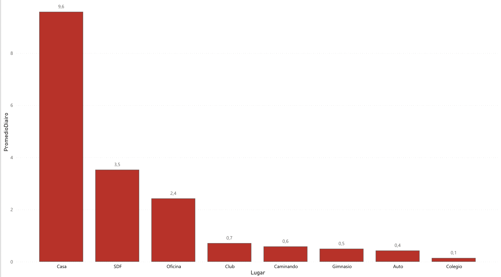

¿de que manera distribuyo cada categoria en cada dÃa?
Herramienta: Tableau · imagen local
1) ¿Cómo se distribuyen Trabajo, Estudio y Deporte?
Herramienta: Flourish
2) ¿Qué dÃa tengo más carga horaria?
Herramienta: Datawrapper
3) ¿A qué categorÃas dedico más horas?
Herramienta: RAWGraphs · imagen local
4) ¿Cuanto tiempo diario promedio paso en cada lugar?
Herramienta: PowerBI · imagen local
